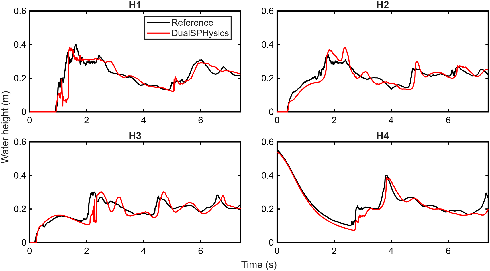
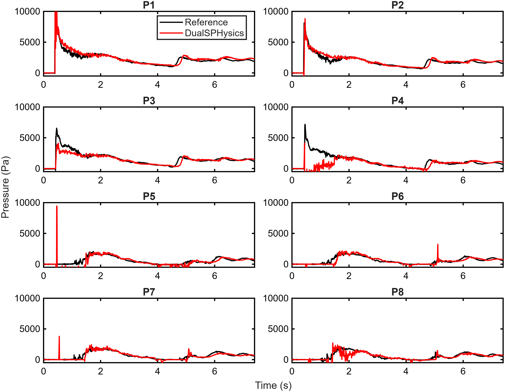

Dambreak 3D¶
Under review by Bonaventura Tagliafierro
This example demonstrates a 3-D dam break simulation with an obstacle. A rectangular water column is initially held at rest, then suddenly released at time \(t=0\). The water collapses under gravity, flows through a rectangular tank and impacts the fixed obstacle downstream. The expected flow includes wave breaking, splashing and interaction with the obstacle.
The case is supplied at DualSPHysics_v6.0/examples/benchmarks/01_Dambreak. It follows SPHERIC Benchmark Test 02, with planned comparisons of water elevation at H1–H4 and pressure at P1–P8. The supplied experimental files are reference/test_case_2_exp_data.xls and reference/test_case_2_v1p1.pdf. The current v6 configuration is provisional: the preliminary pressure comparison below is not a final validation, and the final results and figures remain pending.
Video: To be updated for the current benchmark configuration.
For this dam break case, the local labels are:
mkfluid=0for water particles.mkbound=0for the fixed tank walls and floor.mkbound=50for the fixed obstacle.
These are the labels used by the geometry commands, rather than a verified list of final particle MK values. The XML has no floating bodies, prescribed motion or separately marked impact face.
Geometry Definition¶
Domain Setup¶
The nominal dimensions, resolution and run duration are defined in case/casedef/geometry/predefinition:
<newvarcte waterHeight="0.55" _rem="Water level" />
<newvarcte waterLength="1.228" _rem="Water column length (test case definition)" />
<newvarcte timeMax="7.40" />
<newvarcte timeOut="0.01" />
<newvarcte domainDown="0" />
<newvarcte domainUp="1.228+1.248+0.744" />
<newvarcte domainBeach="domainUp" />
<newvarcte domainWidthY="1.00" />
<newvarcte domainHeight="1.00" />
<newvarcte BoxPosX="1.228+1.248" _rem="Centre of the box in x" />
<newvarcte BoxPosY="0" _rem="Centre of the box in y" />
<newvarcte BoxPosZ="0" _rem="Base of the box" />
<newvarcte BoxLength="0.161" />
<newvarcte BoxWidth="0.403" />
<newvarcte BoxHeight="0.161" />
<newvarcte Dp="BoxLength/20" />
<newvarcte Dpm="Dp/2" />
Particle spacing (dp): Dp=BoxLength/20 gives 0.00805 m (8.05 mm); Dpm=Dp/2 is the half-spacing. This is the fundamental resolution of the simulation. Smaller spacing provides better resolution but increases particle count and computational cost.
Position and dimensions: The nominal tank is 3.22 m long, 1.00 m wide and 1.00 m high. Its floor is at \(z=0\), with side walls at \(y=\pm0.5\) m. The reservoir occupies the upstream end, with nominal length 1.228 m and water depth 0.55 m. The obstacle is centred at \((x,y)=(2.476,0)\) m, with its base at \(z=0\).
The nominal geometry is converted to particle-grid coordinates using the following source expressions:
<newvarcte DefTankpx="domainDown" DefTankpy="-domainWidthY/2" DefTankpz="0" />
<newvarcte DefTanksx="abs(domainDown)+domainBeach" DefTanksy="domainWidthY" DefTanksz="domainHeight" />
<newvarcte DefBoxpx="BoxPosX-BoxLength/2" DefBoxpy="BoxPosY-BoxWidth/2" DefBoxpz="BoxPosZ" />
<newvarcte DefBoxsx="BoxLength" DefBoxsy="BoxWidth" DefBoxsz="BoxHeight" />
<!-- Domain limits -->
<newvarcte PminX="DefTankpx-Dpm-10*Dp" PminY="DefTankpy-Dpm-10*Dp" PminZ="DefTankpz-Dpm-10*Dp" />
<newvarcte PmaxX="DefTankpx+DefTanksx+10*Dp" PmaxY="DefTankpy+DefTanksy+10*Dp" PmaxZ="DefTankpz+DefTanksz" />
<!-- Grid node at nearest to Dp/2 from the real surface -->
<newvarcte PosMin_x="PminX" PosMin_y="PminY" PosMin_z="PminZ" />
<newvarcte Tankpx1="roundposx(DefTankpx-Dpm)" Tankpx2="roundposx(DefTankpx+DefTanksx+Dpm)" />
<newvarcte Tankpy1="roundposy(DefTankpy-Dpm)" Tankpy2="roundposy(DefTankpy+DefTanksy+Dpm)" />
<newvarcte Tankpz1="roundposz(DefTankpz-Dpm)" Tankpz2="roundposz(DefTankpz+DefTanksz+Dpm)" />
<!-- <newvarcte Boxpx1="roundposx(DefBoxpx+Dpm)" Boxpx2="roundposx(DefBoxpx+DefBoxsx-Dpm)" /> -->
<!-- <newvarcte Boxpy1="roundposy(DefBoxpy+Dpm)" Boxpy2="roundposy(DefBoxpy+DefBoxsy-Dpm)" /> -->
<newvarcte Boxpx1="DefBoxpx+Dpm" Boxpx2="roundpos(DefBoxpx+DefBoxsx-Dpm,Boxpx1,Dp)" />
<newvarcte Boxpy1="DefBoxpy+Dpm" Boxpy2="roundpos(DefBoxpy+DefBoxsy-Dpm,Boxpy1,Dp)" />
<newvarcte Boxpz2="DefBoxpz+DefBoxsz-Dpm" />
DefTank* and DefBox* describe nominal surfaces and sizes. The Tank* and Box* coordinates place the wall and obstacle particles using half-spacing offsets and the source's roundpos functions. The commented alternative Boxpx1/Boxpy1 expressions are not active; the following uncommented definitions are used. Retaining these expressions avoids confusing nominal dimensions with grid-rounded particle positions.
The particle-generation definition is:
<definition dp="#Dp">
<pointref x="#PminX" y="#PminY" z="#PminZ" comment="Origin of the particle grid: same as pointmin" />
<pointmin x="#PminX" y="#PminY" z="#PminZ" />
<pointmax x="#PmaxX" y="#PmaxY" z="#PmaxZ" />
</definition>
Generation bounds: These limits provide room for the tank, obstacle and their boundary layers. Both minimum and maximum \(y\) bounds span the tank width, so this is a 3-D case. They are the GenCase drawing bounds; the solver's simulationdomain is configured separately below.
Shape Mode¶
The main drawing list first prepares geometry for the contour and boundary normals, then generates particles:
<!-- Real geometry for contour -->
<setvar contour="1" />
<runlist name="GeometryForNormals" />
<!-- Real geometry (used for normals) -->
<setvar contour="0" />
<runlist name="GeometryForNormals" />
<!-- Particle generation -->
<setactive drawpoints="1" drawshapes="1" />
<setshapemode>actual | bound</setshapemode>
<setdrawmode mode="full" />
Draw mode: full creates the particles requested by each solid or surface drawing command. actual | bound selects the shape representation used here. GeometryForNormals is called twice: the contour switch enables its clipped contour export in the first pass and its hdp normal-geometry export in the second. These are geometry preparation passes, not two physical cases.
Fluid Block (Water Column)¶
The water is drawn after the tank and obstacle:
<setmkfluid mk="0" />
<fillbox x="#Tankpx1+5*Dp" y="0" z="#Tankpz1+2*Dp">
<modefill>void</modefill>
<point x="#DefTankpx-Dpm" y="#Tankpy1-10*Dp" z="#-Dpm" />
<size x="#waterLength" y="#DefTanksy+20*Dp" z="#waterHeight+Dp" />
</fillbox>
Marker assignment: setmkfluid mk="0" selects local fluid label 0 for this filling operation.
Void fill: fillbox with modefill=void fills the available region from the specified seed point. Unlike the old solid water-box example, this command uses the already defined boundaries and the source's filling box.
Position and size: The nominal reservoir extends from \(x=0\) to 1.228 m, spans the tank width and reaches \(z=0.55\) m. The actual filling bounds retain half-spacing and layer allowances through Dpm, Dp and the grid coordinates. They should not be read as a different physical reservoir.
Physical constants: The fluid and time-step scales are supplied by:
<constantsdef>
<gravity x="0" y="0" z="-9.81" comment="Gravitational acceleration" units_comment="m/s^2" />
<rhop0 value="999" comment="Reference density of the fluid" units_comment="kg/m^3" />
<rhopgradient value="3" comment="Initial density gradient 1:Rhop0, 2:Water column, 3:Max. water height (default=2)" />
<hswl value="0" auto="true" comment="Maximum still water level to calculate speedofsound using coefsound" units_comment="metres (m)" />
<gamma value="7" comment="Polytropic constant for water used in the state equation" />
<speedsystem value="0" auto="true" comment="Maximum system speed (by default the dam-break propagation is used)" />
<coefsound value="20" comment="Coefficient to multiply speedsystem" />
<speedsound value="0" auto="true" comment="Speed of sound to use in the simulation (by default speedofsound=coefsound*speedsystem)" />
<coefh value="1.3" comment="Coefficient to calculate the smoothing length (h=coefh*sqrt(3*dp^2) in 3D)" />
<cflnumber value="0.2" comment="Coefficient to multiply dt" />
</constantsdef>
The reference fluid density is 999 kg/m³ and gravity is \((0,0,-9.81)\) m/s². rhopgradient=3 selects the initial density gradient based on the maximum water height. The entries with auto="true" request calculated values rather than prescribing a zero sound speed or still-water height. The case retains gamma=7, coefsound=20, coefh=1.3 and cflnumber=0.2.
Tank Boundaries¶
Inside the main particle-generation list:
<!-- Tank mk=0 -->
<setmkbound mk="0" />
<drawbox>
<boxfill>all^top</boxfill>
<point x="#Tankpx1" y="#Tankpy1" z="#Tankpz1" />
<endpoint x="#Tankpx2" y="#Tankpy2" z="#Tankpz2" />
<layers vdp="0*,1,2,3,4,5" />
</drawbox>
<shapeout file="tank" reset="true" />
Boundary marker: mkbound=0 identifies the fixed tank.
Selective filling: all^top draws the tank faces except the open top. The floor and four walls confine the fluid in the 3-D tank. Their nominal positions are \(z=0\), \(x=0\) and 3.22 m, and \(y=-0.5\) and 0.5 m; the particle positions follow the grid expressions above.
Boundary layers and shape export: layers retains the exact source offsets 0*,1,2,3,4,5 in particle-spacing units. shapeout file="tank" exports the tank shape for geometry inspection. This export is distinct from solver output or a validation result.
Obstacle (Building)¶
The fixed obstacle measures 0.161 m × 0.403 m × 0.161 m in \(x\), \(y\) and \(z\). Its nominal upstream and downstream faces are at \(x=2.3955\) and 2.5565 m, its sides at \(y=\pm0.2015\) m and its top at \(z=0.161\) m.
Step 1: Prepare Geometry for Normals¶
The GeometryForNormals list represents the floor with a hole at the obstacle footprint, then defines the obstacle surfaces. It runs with particle drawing disabled and shape drawing enabled:
<!-- Tank (bottom with hole) -->
<setmkbound mk="0" />
<setnormalinvert invert="false" />
<drawrect>
<point x="#Tankpx1" y="#Tankpy1" z="#Tankpz1+Dpm" />
<endpoint x="#Tankpx2" y="#Tankpy2" z="#Tankpz1+Dpm" />
<layers vdp="-0.5" />
<hole>
<point x="#Boxpx1" y="#Boxpy1" z="#Tankpz1+Dpm" />
<endpoint x="#Boxpx2" y="#Boxpy2" z="#Tankpz1+Dpm" />
</hole>
</drawrect>
<!-- obstacle -->
<setmkbound mk="50" />
<setnormalinvert invert="false" />
<drawbox>
<boxfill>all^bottom</boxfill>
<point x="#Boxpx1" y="#Boxpy1" z="#Tankpz1+Dpm" />
<endpoint x="#Boxpx2" y="#Boxpy2" z="#Boxpz2" />
<layers vdp="0.5" />
</drawbox>
<!-- saves geometry -->
Floor opening: The hole avoids defining an overlapping floor surface inside the obstacle footprint in this geometry pass. It does not create a physical hole through which water leaves the tank.
Obstacle surfaces: all^bottom selects the top and four vertical faces. mkbound=50 distinguishes the obstacle from the tank; no separate pressure-impact marker is assigned.
Step 2: Generate the Boundary Particles¶
The corresponding main-list drawing is:
<!-- obstacle -->
<setmkbound mk="50" />
<setfrdrawmode auto="true" />
<drawbox>
<boxfill>all^bottom</boxfill>
<point x="#Boxpx1" y="#Boxpy1" z="#Tankpz1+Dp" />
<endpoint x="#Boxpx2" y="#Boxpy2" z="#Boxpz2" />
<layers vdp="0*,-1,-2,-3,-4,-5" />
</drawbox>
<setfrdrawmode auto="false" />
<shapeout file="obstacle" />
Wall surfaces: The obstacle has no independently drawn bottom face because it sits on the tank floor. Its boundary particles use the source's grid coordinates, automatic free drawing and inward layer offsets. shapeout file="obstacle" records its shape. There is no separate setmkvoid obstacle-removal step or re-marking of an impact face in the current particle-generation sequence.
Boundary Normals¶
<normals>
<distanceh value="2.0" comment="Maximum distance (H*distanceh) to compute normals data (default=2)" />
<geometryfile file="[CaseName]_hdp_Actual.vtk" comment="File with boundary geometry (VTK format). Use NONE to ignore it." />
</normals>
The normal calculation uses the geometry prepared in the hdp pass and a maximum search distance of \(2h\). [CaseName] is the source placeholder for the case name; the filename is a configured preprocessing reference, not evidence that a generated file is already included.
Numerical Configuration¶
The boundary treatment, integration, kernel and viscosity entries are copied from execution/parameters:
<parameter key="Boundary" value="mDBC" comment="Boundary method: DBC, mDBC, MIX:MixBC (default=DBC)" />
<parameter key="SlipMode" value="V0" comment="Slip mode for mDBC: NS:No-slip, FS:Free slip, V0:TanVel=0, M22:mDBC 2022 (default=NS)" />
<parameter key="NoPenetration" value="Y" comment="Activate No-Penetration option for mDBC: Y/N (default=N)" />
<parameter key="StepAlgorithm" value="SYM" comment="Step Algorithm: SYM:Symplectic, VER:Verlet (default=SYM)" />
<parameter key="VerletSteps" value="40" comment="Verlet only: Number of steps to apply Euler timestepping (default=40)" />
<parameter key="Kernel" value="WC2" comment="Interaction Kernel: WC2:WendlandC2, WC6:WendlandC6 (default=WC2)" />
<parameter key="ViscoTreatment" value="ART" comment="Viscosity formulation: LAM:Laminar, ART:Artificial (default=LAM)" />
<parameter key="Visco" value="#1e-6*10/(CoefSound*H)" comment="Viscosity value. Typically 0.01 for Artificial and 1e-6 m^2/s (water kinematic viscosity) for Laminar" />
<parameter key="ViscoBoundFactor" value="1" comment="Multiply viscosity value with boundary (default=1)" />
<parameter key="Turbulence" value="NO" comment="Turbulence model: NO:None, SPS:Sub-particle scale (default=NO)" />
Boundary treatment: This case uses mDBC with SlipMode=V0 (zero tangential velocity) and NoPenetration=Y. The fixed obstacle uses the same formulation as the tank.
Time integration and kernel: SYM selects symplectic integration and WC2 selects Wendland C2. VerletSteps=40 is present in the source but is a Verlet-only companion parameter; it is not an active control for the selected symplectic scheme.
Viscosity: ART selects artificial viscosity. Its coefficient is the case expression #1e-6*10/(CoefSound*H), not a fixed value of 0.01 and not a LAM viscosity setting. ViscoBoundFactor=1 is retained, while Turbulence=NO disables a separate turbulence model. The expression is evaluated during case preparation; no generated value is assumed here.
Density diffusion, divergence cleaning and shifting are:
<parameter key="DensityDT" value="FO" comment="Density Diffusion Term: NO:None, FO:Fourtakas (default=NO)" />
<parameter key="DensityDTvalue" value="0.10" comment="DDT value (default=0.1)" />
<parameter key="DivCleanKp" value="0" comment="Kappa parameter for Divergence Cleaning (equal to coefsound) (default=0)" />
<parameter key="Shifting" value="1" comment="Shifting mode 0:None, 1:Ignore bound, 2:Ignore fixed, 3:Full, 4:Full advanced (default=0)" />
<parameter key="ShiftCoef" value="-2" comment="Coefficient for standard shifting computation (default=-2)" />
<parameter key="ShiftTFS" value="2.75" comment="Threshold to detect free surface. Typically 1.5 for 2D and 2.75 for 3D (default=0)" />
<parameter key="ShiftAdvCoef" value="-0.01" comment="Coefficient for advanced shifting computation (default=-0.01)" />
<parameter key="ShiftAdvALE" value="N" comment="ALE formulation for advanced shifting: Y/N (default=N)" />
<parameter key="ShiftAdvNCPress" value="N" comment="Non conservative pressure formulation for advanced shifting: Y/N (default=N)" />
Density diffusion: FO selects the current Fourtakas formulation with coefficient 0.10; see Fourtakas et al. (2019). Removed density-diffusion selectors are not alternatives for this v6 example.
Shifting: Mode 1 is the standard mode labelled “Ignore bound”, with ShiftCoef=-2 and ShiftTFS=2.75. The ShiftAdv* parameters are retained in the source but belong to advanced shifting, which is not selected. DivCleanKp=0 disables divergence cleaning.
Time-step, saving and particle-retention settings include:
<parameter key="SavePosDouble" value="Y" comment="Saves particle position using double precision: Y/N (default=N)" />
<parameter key="SaveExtraParts" value="0" comment="Part interval or list for saving extra data for restart option (default=0)" />
<parameter key="RigidAlgorithm" value="FREE" comment="Rigid Algorithm: FREE:collision-free, SPH, DEM, CHR:Chrono collision (default=SPH)" />
<parameter key="FtPause" value="0.0" comment="Time to freeze the floatings at simulation start (warmup) (default=0)" units_comment="seconds" />
<parameter key="FtIgnoreRadius" value="N" comment="Ignores floating body radius with periodic conditions: Y/N (default=N)" />
<parameter key="CoefDtMin" value="0.001" comment="Coefficient to calculate minimum time step dtmin=coefdtmin*h/speedsound (default=0.05)" />
<parameter key="DtIni" value="#2*Dp/1500" comment="Initial time step. Use 0 to default use (default=h/speedsound)" units_comment="seconds" />
<parameter key="DtMin" value="0" comment="Minimum time step. Use 0 to default use (default=coefdtmin*h/speedsound)" units_comment="seconds" />
<parameter key="DtFixed" value="0" comment="Fixed Dt value. Use 0 to disable (default=disabled)" units_comment="seconds" />
<parameter key="DtFixedFile" value="NONE" comment="Dt values are loaded from file. Use NONE to disable (default=disabled)" units_comment="milliseconds (ms)" />
<parameter key="DtAllParticles" value="N" comment="Velocity of all the particles is used to calculate DT. Y:All, N:Only fluid/floating (default=N)" />
<parameter key="TimeMax" value="#timeMax" comment="Time of simulation" units_comment="seconds" />
<parameter key="TimeOut" value="#timeOut" comment="Time out data" units_comment="seconds" />
<parameter key="TimeOutExtra" value="0.05" />
<parameter key="RhopOutMin" value="700" comment="Minimum density valid (default=700)" units_comment="kg/m^3" />
<parameter key="RhopOutMax" value="1300" comment="Maximum density valid (default=1300)" units_comment="kg/m^3" />
<parameter key="WrnPartsOut" value="Y" comment="Active warning according to number of out particles: Y/N (default=Y)" />
<parameter key="MinFluidStop" value="0" comment="Minimum proportion of initial fluid particles to continue the simulation 0:Never stops, 0.1:Stops when fluid drops to 10%. (default=0)" />
Duration and output: #timeMax and #timeOut evaluate to 7.40 s and 0.01 s. TimeOutExtra=0.05 is an additional output setting and does not replace TimeOut; the source separately sets SaveExtraParts=0. Positions are saved with double precision. DtIni retains its source expression, DtFixed=0/DtFixedFile=NONE disable fixed time stepping, and CoefDtMin=0.001 supplies the minimum-step coefficient when the default minimum is used.
Particle limits: The valid density interval is 700–1300 kg/m³, particle-loss warnings are enabled, and MinFluidStop=0 disables stopping at a specified remaining-fluid proportion. There are no floating bodies, so RigidAlgorithm, FtPause and FtIgnoreRadius do not describe a moving obstacle or a delayed release in this case.
The solver domain remains automatic:
<simulationdomain comment="Defines domain of simulation (default=Uses minimum and maximum position of the generated particles)">
<posmin x="default" y="default" z="default" comment="e.g.: x=0.5, y=default-1, z=default-10%" />
<posmax x="default" y="default" z="default" />
</simulationdomain>
General XML syntax and parameter organisation are explained in the XML Configuration guide.
Running the Simulation¶
Input Files and Output Directories¶
| Source file | Purpose |
|---|---|
Dambreak_Def.xml |
Editable geometry, normal preparation, runtime gauges and numerical configuration. |
wDambreak_win64_GPU.bat |
Current Windows GPU preprocessing, solver and post-processing sequence. |
elevation.txt |
Four vertical sampling lines for MeasureTool water elevations. |
pressure_points.txt |
Eight numerical pressure-sampling points on and above the obstacle. |
reference/test_case_2_exp_data.xls |
Experimental pressure and water-elevation histories. |
reference/test_case_2_v1p1.pdf |
SPHERIC test description, experimental geometry and sensor layout. |
Numerical results are available under Dambreak_out/. The following structure summarises the output locations configured by the current BAT; inclusion in the release ZIP is a separate packaging decision.
Dambreak_out/
├── data/ Solver particle data used by the post-processing tools
├── particles/ PartVTK and PartVTKOut output prefixes
├── post/ MeasureTool measurement output prefixes
└── surface/ IsoSurface output prefix
GenCase and the solver also use Dambreak_out/ itself. Directory and output prefixes below describe the script; they do not establish the names or availability of individual generated CSV, PART or VTK files.
Windows¶
From the benchmark folder, the supplied script is wDambreak_win64_GPU.bat. Its selected case and executable assignments are:
set partvtk="%dirbin%/PartVTK_win64.exe"
set partvtkout="%dirbin%/PartVTKOut_win64.exe"
set measuretool="%dirbin%/MeasureTool_win64.exe"
The executable paths are relative to the final package layout. The following are excerpts from the BAT, using its variables rather than synthetic executable names:
rem Executes GenCase to create initial files for simulation.
%gencase% %name%_Def %dirout%/%name% -save:all
if not "%ERRORLEVEL%" == "0" goto fail
rem Executes DualSPHysics to run the SPH simulation.
%dualsphysicsgpu% -gpu %dirout%/%name% %dirout%
if not "%ERRORLEVEL%" == "0" goto fail
GenCase reads Dambreak_Def and writes the prepared case with prefix Dambreak_out/Dambreak. The GPU solver then reads that prefix and writes to Dambreak_out; it does not receive an extra nested Dambreak_out/Dambreak/data output directory. The BAT checks the solver return code immediately after the displayed call, just as it checks GenCase.
The script's existing-output menu offers deletion and rerun, post-processing only, or abort. Choose deliberately when results already exist: deletion is a script option, not a prerequisite for reading the case or this walkthrough.
Final Release Platforms¶
The release plan includes Windows GPU and CPU BAT files and Linux GPU and CPU SH files. Only the current Windows GPU BAT has been verified here. The other final scripts and their exact filenames remain subject to packaging confirmation; no unverified Linux or CPU commands are presented as supplied scripts.
Post Processing¶
In BAT order, the active post-processors are PartVTK, PartVTKOut, MeasureTool surface elevation, MeasureTool water column with depthfirst, MeasureTool pressure, and IsoSurface. Each active call has a return-code check. The subsections distinguish these measurements without changing the script sequence.
Particle Visualisation¶
The BAT first exports fluid particles, then excluded-fluid information:
rem Executes PartVTK to create VTK files with fluid particles.
set dirout2=%dirout%\particles
%partvtk% -dirdata %diroutdata% -savevtk %dirout2%/PartFluid -onlytype:-all,+fluid -continue:1
if not "%ERRORLEVEL%" == "0" goto fail
rem Executes PartVTKOut to create VTK files with excluded particles.
%partvtkout% -dirdata %diroutdata% -savevtk %dirout2%/PartFluidOut -SaveResume %dirout2%/_ResumeFluidOut
if not "%ERRORLEVEL%" == "0" goto fail
-onlytype:-all,+fluid first excludes every particle type and then includes fluid particles. PartVTK's -continue:1 processes only new VTK files. PartFluid, PartFluidOut and _ResumeFluidOut are the exact output prefixes in the script; they are not claims that these outputs already exist. Both tool calls are followed by the BAT's error checks.
Water Elevation at H1–H4¶
The experimental layout in Figure 6 of test_case_2_v1p1.pdf measures \(x\) from the end opposite the model's reservoir. The model reverses that longitudinal coordinate:
The physical locations therefore map as follows. The reversal concerns the longitudinal axis; it is not a change to the measured water elevation.
| Gauge | Reference x (m) | Model x (m) | Model location |
|---|---|---|---|
| H1 | 0.496 | 2.724 | Downstream of the obstacle. |
| H2 | 0.992 | 2.228 | Upstream of the obstacle. |
| H3 | 1.488 | 1.732 | Between the reservoir and the obstacle. |
| H4 | 2.638 | 0.582 | Within the initial reservoir. |
MeasureTool Sampling Lines¶
elevation.txt contains:
POINTSLIST #H4
0.582000 0.000000 0.010733
0 0 0.002
1 1 495
POINTSLIST #H3
1.732000 0.000000 0.010733
0 0 0.002
1 1 495
POINTSLIST #H2
2.228000 0.000000 0.010733
0 0 0.002
1 1 495
POINTSLIST #H1
2.724000 0.000000 0.010733
0 0 0.002
1 1 240
Each POINTSLIST gives an initial point, an XYZ step and an XYZ count. All four lines have \(y=0\) and vertical spacing 0.002 m. The last sampled height is the initial height plus (count−1)×step:
| Gauge | x (m) | Initial z (m) | Step z (m) | Samples | Last sampled z (m) |
|---|---|---|---|---|---|
| H1 | 2.724 | 0.010733 | 0.002 | 240 | 0.488733 |
| H2 | 2.228 | 0.010733 | 0.002 | 495 | 0.998733 |
| H3 | 1.732 | 0.010733 | 0.002 | 495 | 0.998733 |
| H4 | 0.582 | 0.010733 | 0.002 | 495 | 0.998733 |
These are numerical scan lines rather than point measurements at one fixed height. Their order in the file is H4, H3, H2, H1; match the output columns to the actual coordinates before comparing them with the experimental labels.
The first water-elevation call in the BAT is:
rem Executes MeasureTool to export the selected measurements to CSV files.
set dirout2=%dirout%\measure
%measuretool% -dirdata %diroutdata% -points elevation.txt -onlytype:-all,+fluid -elevation:0.5 -savecsv %dirout2%/SurfaceElevation
if not "%ERRORLEVEL%" == "0" goto fail
-elevation:0.5 computes fluid elevation from the kernel-sum threshold of 0.5 used here for 3-D measurements. Next in the post-processing section, before the pressure call, the BAT repeats the elevation calculation with an additional depth quantity:
rem Executes MeasureTool to export the selected measurements to CSV files.
%measuretool% -dirdata %diroutdata% -points elevation.txt -onlytype:-all,+fluid -elevation:0.5 -hvars:+depthfirst -savecsv %dirout2%/WaterColumn
if not "%ERRORLEVEL%" == "0" goto fail
-hvars:+depthfirst additionally requests the first fluid depth near the bottom. The current BAT uses distinct measure/SurfaceElevation and measure/WaterColumn prefixes, followed by measure/Pressure for pressure. Inspect the generated headers when selecting elevation or depth; these are distinct requested quantities.
Runtime XML Gauges¶
The XML also defines four SWL gauges at the same longitudinal positions, independently of the MeasureTool file:
<newvarcte H1x="domainUp-0.496" _rem="Behind the box (2.724)" />
<newvarcte H2x="domainUp-0.992" _rem="In front of the box (2.228)" />
<newvarcte H3x="domainUp-1.488" _rem="Mid tank (1.732)" />
<newvarcte H4x="domainUp-2.638" _rem="In the reservoir (0.582)" />
<gauges>
<default>
<savevtkpart value="false" comment="Creates VTK files for each PART (default=false)" />
<computedt value="0.01" comment="Time between measurements. 0:all steps (default=TimeOut)" units_comment="s" />
<output value="true" comment="Creates CSV files of measurements (default=false)" />
<outputdt value="0.01" comment="Time between output measurements. 0:all steps (default=TimeOut)" units_comment="s" />
</default>
<swl name="H1">
<pointdp coefdp="0.05" comment="Distance between check points (value=coefdp*dp)" />
<point0 x="#H1x" y="0" z="#BoxPosZ+Dp" comment="Initial point" units_comment="m" />
<point2 x="#H1x" y="0" z="#domainHeight" comment="Final point" units_comment="m" />
</swl>
<swl name="H2">
<pointdp coefdp="0.05" comment="Distance between check points (value=coefdp*dp)" />
<point0 x="#H2x" y="0" z="#BoxPosZ+Dp" comment="Initial point" units_comment="m" />
<point2 x="#H2x" y="0" z="#domainHeight" comment="Final point" units_comment="m" />
</swl>
<swl name="H3">
<pointdp coefdp="0.05" comment="Distance between check points (value=coefdp*dp)" />
<point0 x="#H3x" y="0" z="#BoxPosZ+Dp" comment="Initial point" units_comment="m" />
<point2 x="#H3x" y="0" z="#domainHeight" comment="Final point" units_comment="m" />
</swl>
<swl name="H4">
<pointdp coefdp="0.05" comment="Distance between check points (value=coefdp*dp)" />
<point0 x="#H4x" y="0" z="#BoxPosZ+Dp" comment="Initial point" units_comment="m" />
<point2 x="#H4x" y="0" z="#domainHeight" comment="Final point" units_comment="m" />
</swl>
</gauges>
All four runtime scans extend from \(z=\mathrm{BoxPosZ}+Dp=0.00805\) m to \(z=1\) m at \(y=0\), with checking distance 0.05×Dp=0.0004025 m. Measurements and CSV output are requested every 0.01 s; per-PART gauge VTK output is disabled. These runtime scans differ from the spacing and, for H1, the upper limit in elevation.txt. Identify which measurement method is used in the final comparison rather than mixing them. No generated gauge files have been inspected for this case.
Pressure at P1–P8¶
The experimental obstacle has P1–P4 on its upstream vertical face and P5–P8 on its top, as shown in Figure 7 of the reference PDF. Numerical pressure is interpolated from fluid particles at the points supplied in pressure_points.txt:
| Sensor | x (m) | y (m) | Numerical z (m) | Nominal experimental z (m) |
|---|---|---|---|---|
| P1 | 2.395500 | −0.025500 | 0.026367 | 0.021 |
| P2 | 2.395500 | −0.025500 | 0.066367 | 0.061 |
| P3 | 2.395500 | −0.025500 | 0.106367 | 0.101 |
| P4 | 2.395500 | −0.025500 | 0.146367 | 0.141 |
| P5 | 2.416500 | −0.025500 | 0.166367 | 0.161 |
| P6 | 2.456500 | −0.025500 | 0.166367 | 0.161 |
| P7 | 2.496500 | −0.025500 | 0.166367 | 0.161 |
| P8 | 2.536500 | −0.025500 | 0.166367 | 0.161 |
P1–P4 share the nominal upstream-face \(x\) coordinate. P5–P8 progress across the top in the longitudinal direction. The table preserves the numerical \(y\) convention directly from the input file; the PDF describes the experimental sensor line through dimensions from the obstacle edges.
Pressure-sampling positions
The numerical heights are approximately 0.005367 m above the nominal experimental heights. The reason for this offset requires maintainer confirmation. It has not been removed or applied as an offset to the experimental data. The current mDBC/V0/NoPenetration configuration does not by itself establish the appropriate probe relocation.
The actual pressure call is:
rem Executes MeasureTool to export the selected measurements to CSV files.
%measuretool% -dirdata %diroutdata% -points pressure_points.txt -onlytype:-all,+fluid -vars:-all,+press -kcusedummy:0 -kclimit:0.01 -savecsv %dirout2%/Pressure
if not "%ERRORLEVEL%" == "0" goto fail
-points selects the eight numerical locations; -onlytype:-all,+fluid selects fluid particles for interpolation. -vars:-all,+press deselects all quantities and then requests pressure. The current MeasureTool help defines -kclimit:0.01 as the minimum kernel sum sum_wab_vol for applying kernel correction, and -kcusedummy:0 disables use of the dummy value when that correction is not applied. These options do not establish experimental agreement or justify moving the sensors.
The experimental workbook labels pressure in Pa and time in s. The preliminary figure also labels Pressure (Pa) and Time (s). Before the final comparison, verify the generated numerical headers, pressure convention and time origin; identical numerical and experimental time origins have not been established. No arbitrary time shift, pressure correction or elevation offset is applied here.
Surface Visualisation¶
The final active IsoSurface command is:
rem Executes IsoSurface to create VTK files with fluid surfaces or slices.
set dirout2=%dirout%\surface
%isosurface% -dirdata %diroutdata% -saveiso %dirout2%/Surface -vars:-all,vel,rhop,idp,type
if not "%ERRORLEVEL%" == "0" goto fail
It requests an isosurface with prefix Dambreak_out/surface/Surface and the listed variables. The slice definitions are commented out. The active IsoSurface command is followed by a return-code check.
Results and Validation¶
Experimental Data and Comparison Status¶
In reference/test_case_2_exp_data.xls, the Experimental_data worksheet labels column A as time (s), B–I as P1–P8 (Pa), and K–N as H1–H4 (m); column J separates the channel groups. Use those labels and the reference PDF to map quantities before comparing numerical output. The workbook's existing graphs are not new numerical results for the current v6 configuration.
The validation set comprises four water-height histories and eight obstacle-pressure histories. Available generated metadata records 0.00805 m spacing, mDBC/V0, artificial viscosity and 7.4 s duration. These inspected settings agree with the current definition, but do not establish complete provenance of either PNG or experimental agreement. No simulation or post-processing was run for this documentation update.
Water-Elevation Comparison¶

Preliminary figure. The numerical results and their comparison with the reference data are pending final verification.
Preliminary Pressure Comparison¶
Figure 2 provides the updated preliminary P1–P8 pressure comparison with Reference and DualSPHysics curves. It supersedes the earlier ART/LAM alternative plot for this comparison. The image alone does not establish that every numerical setting and measurement convention matches the current case.

Preliminary figure. The numerical results and their comparison with the reference data are pending final verification.
The copied PNGs are unchanged. Open them at full resolution to inspect individual panels. No quantified accuracy assessment is established; the pressure-sampling offset and time/measurement conventions still require confirmation. Final particle and surface videos remain pending.
References¶
- SPHERIC Benchmark Test 02, 3-D schematic dam break and evolution of the free surface, coordinated by R. Issa and D. Violeau. Test description and experimental data. The case supplies
reference/test_case_2_v1p1.pdfandreference/test_case_2_exp_data.xls. - Fourtakas G, Domínguez JM, Vacondio R, Rogers BD. 2019. Local Uniform Stencil (LUST) boundary condition for arbitrary 3-D boundaries in parallel smoothed particle hydrodynamics (SPH) models. Computers & Fluids, 190: 346–361. doi:10.1016/j.compfluid.2019.06.009.